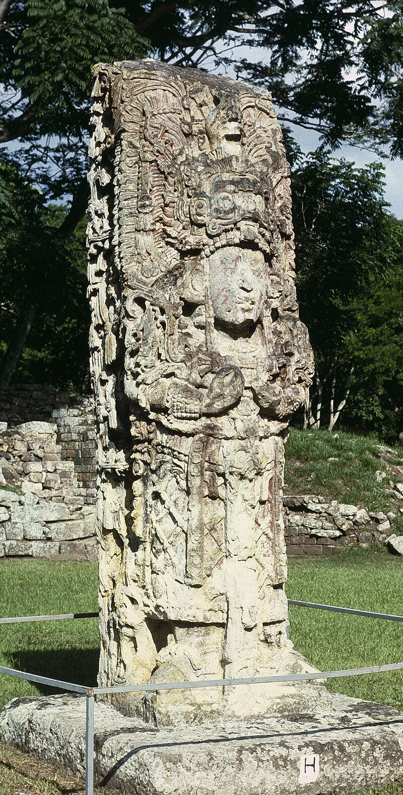
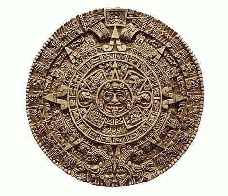
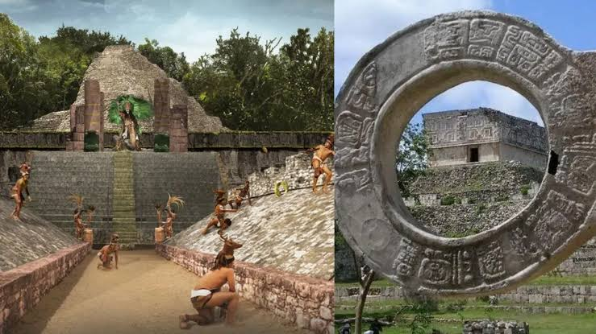
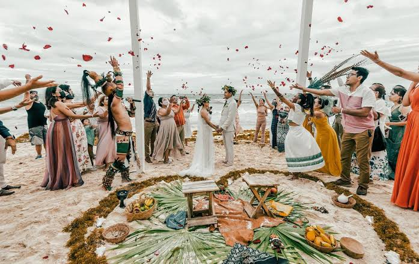

La Civilización Maya: Historia, Cultura y Legado
Introducción
La civilización maya fue una de las más avanzadas de Mesoamérica, destacándose por sus logros en matemáticas, astronomía, arquitectura y escritura. Se desarrolló principalmente en la península de Yucatán, Guatemala, Belice y partes de Honduras y El Salvador. Su historia se divide en tres grandes periodos: Preclásico, Clásico y Posclásico.
La sociedad maya dejó un legado impresionante en términos de conocimiento y cultura, aspectos que siguen siendo estudiados en la actualidad. Su influencia perdura en los pueblos indígenas modernos y en el interés arqueológico que sus estructuras despiertan a nivel mundial.
Orígenes y Desarrollo
Los mayas se asentaron en la región alrededor del 2000 a.C., iniciando su desarrollo con aldeas agrícolas y una organización social basada en la producción de maíz, frijoles y calabazas. Durante el periodo Preclásico (2000 a.C. - 250 d.C.), establecieron los primeros centros urbanos y comenzaron a desarrollar una estructura jerárquica. En este periodo también se evidencian los primeros templos ceremoniales y sistemas de escritura rudimentarios.
El periodo Clásico (250 - 900 d.C.) marcó el apogeo de la civilización maya, con la consolidación de ciudades como Tikal, Palenque, Copán y Calakmul. Durante este tiempo, los mayas desarrollaron sofisticadas formas de arte, expandieron su conocimiento astronómico y mejoraron sus sistemas de gobierno. La rivalidad entre ciudades-estado llevó a guerras constantes, lo que eventualmente debilitó a la civilización.
En el Posclásico (900 - 1500 d.C.), muchas ciudades del Clásico fueron abandonadas, posiblemente debido a factores como sequías prolongadas, guerras y agotamiento de recursos. Sin embargo, nuevas urbes como Chichén Itzá, Uxmal y Mayapán se consolidaron como centros de poder en la península de Yucatán. El contacto con otras civilizaciones, como los toltecas, influyó en la cultura maya de este periodo.

Ruinas de Tikal, Guatemala

Templo de Kukulkán, Chichén Itzá
Cultura y Conocimientos
Los mayas desarrollaron un sistema de escritura jeroglífica, el más avanzado de Mesoamérica, lo que les permitió documentar su historia, conocimientos científicos y acontecimientos políticos en códices y estelas. Su sistema matemático basado en el vigesimal incluía el uso del número cero, un concepto innovador en la época.
También crearon un calendario preciso basado en ciclos solares y lunares, compuesto por el calendario sagrado Tzolk'in de 260 días y el calendario Haab' de 365 días. A través de la observación astronómica, los mayas lograron predecir eclipses y otros eventos celestes con notable exactitud. Su arquitectura monumental incluyó pirámides escalonadas, templos y palacios decorados con intrincados relieves.

Jeroglíficos mayas en una estela

Representación del calendario maya
Religión y Sociedad
La religión maya era politeísta y giraba en torno a dioses relacionados con la naturaleza, los astros y la vida cotidiana. Entre sus deidades principales se encuentran Itzamná, dios de la sabiduría; Kukulkán, la serpiente emplumada; y Chaac, el dios de la lluvia. Creían en un complejo inframundo llamado Xibalbá, el cual estaba gobernado por dioses de la muerte y las enfermedades.
Para honrar a sus dioses, los mayas realizaban rituales que incluían ofrendas, danzas y sacrificios humanos. Consideraban que estos sacrificios eran necesarios para mantener el equilibrio del cosmos y asegurar el bienestar de su sociedad.
La estructura social estaba compuesta por una élite gobernante, integrada por reyes y nobles, seguida por sacerdotes, guerreros, comerciantes y artesanos. La mayoría de la población era campesina, dedicada a la agricultura y la producción de bienes básicos. El comercio era vital para la economía maya, con una red de intercambio que abarcaba toda Mesoamérica e incluía productos como cacao, jade y obsidiana.
Costumbres Culturales Mayas
- El respeto a la naturaleza - Creían que todo tenía un espíritu, desde los árboles hasta los ríos. Siempre pedían permiso antes de cortar un árbol o cazar un animal.
- El uso del calendario sagrado - Tenían dos calendarios: el Tzolk'in (ritual, de 260 días) y el Haab' (solar, de 365 días). Les servían para organizar ceremonias, cosechas y profecías.
- Los sacrificios y autosacrificios - Ofrecían sangre a los dioses, ya fuera con sacrificios humanos (usualmente prisioneros de guerra) o haciéndose cortes en la lengua o en las orejas.
- La deformación craneal - Les deformaban el cráneo a los bebés con tablas para que tuvieran una cabeza alargada, porque se consideraba hermoso y noble.
- El uso de jade en los dientes - Se incrustaban piedras preciosas en los dientes como signo de estatus social.
Tradiciones Mayas
- El juego de pelota - No era solo deporte, tenía un significado religioso y político. A veces, los perdedores eran sacrificados.
- El Hanal Pixán - Es el equivalente al Día de Muertos en Yucatán, donde hacen altares y ofrendas a los difuntos.
- Las ceremonias al dios Chaac - Hacían rituales para pedir lluvia, a veces arrojando ofrendas (o hasta personas) a los cenotes.
- Las bodas mayas - No eran por amor, sino arregladas entre familias. El sacerdote dirigía el ritual y la esposa tenía que demostrar que sabía cocinar para ser aceptada.
- Los bautizos con miel - A los bebés mayas los purificaban con miel y agua en un ritual de iniciación a la vida.

Cancha del juego de pelota maya

Representación de una ceremonia maya
Decadencia y Legado
El colapso de la civilización maya sigue siendo objeto de debate entre los especialistas. Factores como la sobrepoblación, el agotamiento de los recursos naturales, conflictos internos y sequías prolongadas han sido señalados como posibles causas del abandono de muchas ciudades en el periodo Clásico. Sin embargo, la cultura maya no desapareció por completo, sino que continuó evolucionando en distintas regiones.
A pesar de la conquista española en el siglo XVI, los mayas han preservado muchas de sus tradiciones y su idioma. Actualmente, millones de personas en México, Guatemala y Belice continúan hablando lenguas mayas y practicando costumbres heredadas de sus ancestros.
El legado arquitectónico de los mayas sigue asombrando al mundo, con sitios arqueológicos como Tikal, Uxmal y Palenque, que son Patrimonio de la Humanidad y reciben miles de visitantes cada año. Su contribución a la astronomía, la matemática y la escritura ha sido ampliamente reconocida, y sus códices y monumentos continúan siendo estudiados por expertos.
Referencias
- Coe, M. D., & Houston, S. (2015). The Maya. Thames & Hudson.
- Demarest, A. (2004). Ancient Maya: The Rise and Fall of a Rainforest Civilization. Cambridge University Press.
- Martin, S., & Grube, N. (2008). Chronicle of the Maya Kings and Queens: Deciphering the Dynasties of the Ancient Maya. Thames & Hudson.
- Schele, L., & Freidel, D. (1990). A Forest of Kings: The Untold Story of the Ancient Maya. William Morrow & Co.
- Sharer, R. J., & Traxler, L. P. (2006). The Ancient Maya. Stanford University Press.